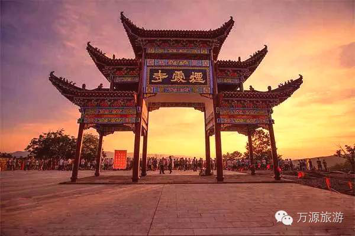

钦州烟霞山


广西烟霞山风景区位于广西钦州市灵山县烟墩镇，距南宁100公里，距钦州80公里，距灵山县35公里，是集自然生态环境、观光游览、民俗文化体验、宗教朝拜、农业休闲观光为一体的壮乡风情岭南旅游胜地。
广西烟霞山风景区位于广西钦州市灵山县烟墩镇，其地貌是由红色砂岩构成（形成于6000万年前的河、湖中），经过百千年的流水塑造形成巍峨独特的地形，地理学称为丹霞地貌。且发育典型、类型齐全、形态丰富、具有雄、奇、秀、险、幽、奥、旷等特点，如神似老人脸庞的老子峰、阳刚奇特的擎天一柱、秀丽雄伟的花龙岭等丹霞奇观。奇山亦有妙水，如流觞曲水般的银柳瀑布，柳暗花明处的洞天瀑布，潺潺如歌的梦蝶瀑布，无一不显丹霞生态景观之美。
烟霞山风景区自然生态动植物资源非常丰富，如野猪、猪仔狸、白鹭、豹猫等多种珍稀野生动物及野生石斛、金银花、田七、灵芝草等多种名贵中草药植物。景区秉持着乡村与生态相结合的建设理念，融入本土民俗文化特色，开展跳岭头、烟墩大鼓表演等非遗文化项目展示，设有民俗博物馆、各类科普教育活动场地。配备野外烧烤、农家乐、荔枝等农作物采摘、野外露营、运动拓展、动物逗趣等野趣项目。实属亲子游玩、野外拓展采风、乡村生态游玩休闲度假的上佳选择！